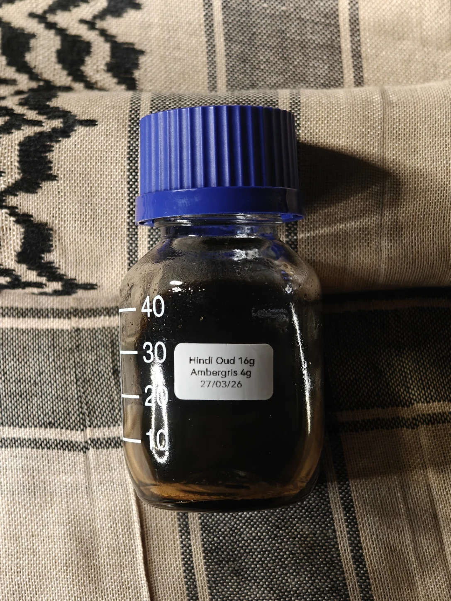

Hindi Oud x Ambergris
A classic of a classic of a classic; thick, full bodied, intoxicating sensual Hindi oud when done well and with care, it is almost impossible to go wrong with such a staple in both culture and society.
So, obviously, it has to be used as a medium for white sun aged ambergris. This maceration is not black, not even remotely, it is such a heavy dense red that can only be seen at the edge of light -
imagine the last bits of data at the edge of an event horizon, just before the absolute darkness of a blackhole.
A simple blend, a nod to antiquity, ambergris dropped into a classic Hindi oud. Vigorous agitation was required with higher temperature, all manually with shaken hands and boiled water, was required to gently suggest the materials to blend.
Thick mass still forms and a complete transmutation seems impossible, unlike other maceration, this will carry the aroma of time and care separate to the oud and ambergris mix as it chemically manifests into uniformity and completion.
Simply basic, there's nothing complex here, high quality Hindi oud and high quality ambergris all reminiscent of old age perfumery. Maddeningly thick and monstrous.